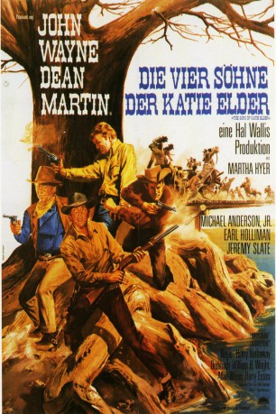

#11586 Die Vier Söhne der Katie Elder
Alternativ: The Sons of Katie Elder (Englischer Titel)
 
 IMDB-Wertung: 7.2 / 10
IMDB-Wertung: 7.2 / 10  Tomatometer: 100
Tomatometer: 100  Metascore: 0
Metascore: 0 
Die vier Söhne der Katie Elder treffen sich nach Jahren zur Beerdigung ihrer Mutter wieder. Doch die Andacht währt nicht lange und muss brennenden Fragen weichen: Wer hat den Vater der Vier getötet und ihre Mutter um die Farm betrogen? Die völlig unterschiedlichen Brüder raufen sich zusammen, um das herauszufinden. Dabei geht es nicht nur um die Ehre, sondern bald auch um das Herz einer schönen Frau...
Jahr: 1965
Dauer: 121 Minuten
FSK: 12
Land: USA Studio: A Paramount ReleaseTonspuren: DD2.0 - ,
Untertitel:
Auflösung: 1080p (1920x816) Größe: 8949 MB
Genre: Western
Regisseur: Henry Hathaway
Drehbuch: William H. Wright, Allan Weiss, Harry Essex, Talbot Jennings
Soundtrack: Elmer Bernstein
Darsteller:
Datei: X:\HD-Western-Collections\John Wayne\Vier Söhne der Katie Elder, Die (1965, FSK12, 1920x816).mkv seit 01.08.2019
Festplatte: HD Eastern+Western
 Es gibt insgesamt 34 Filme in der Gruppe 'HD-Western-Collections\John Wayne'
Es gibt insgesamt 34 Filme in der Gruppe 'HD-Western-Collections\John Wayne'